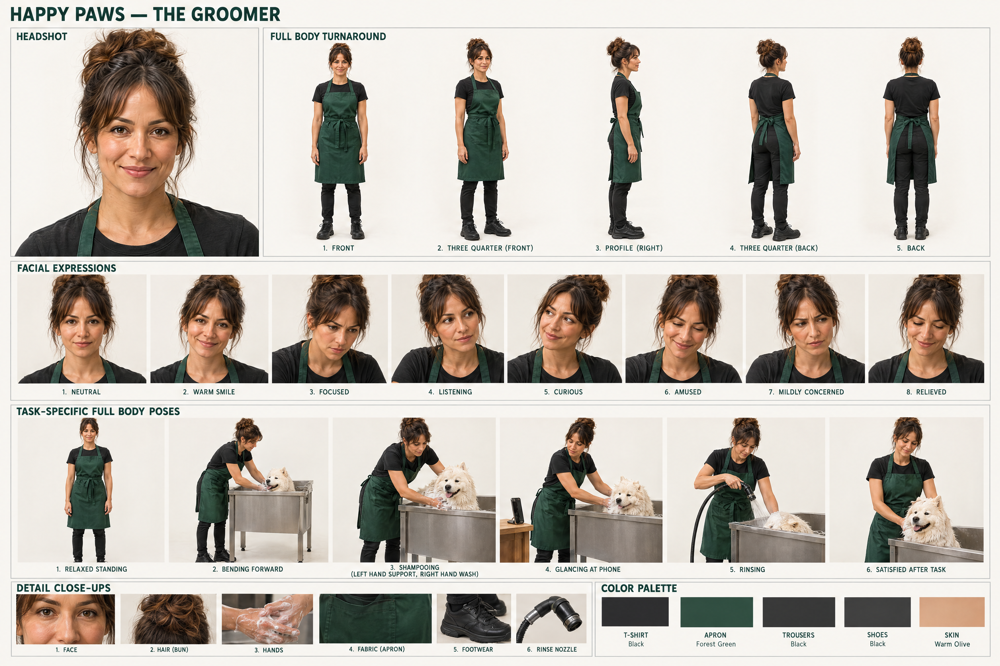
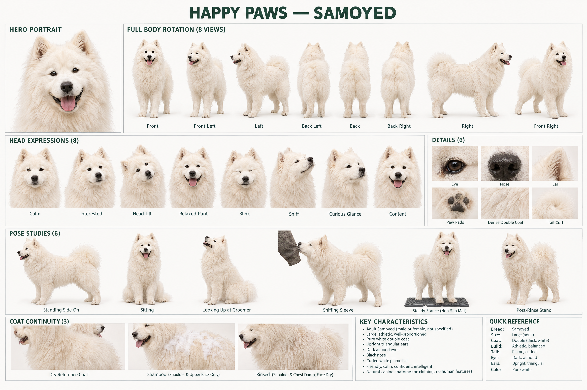
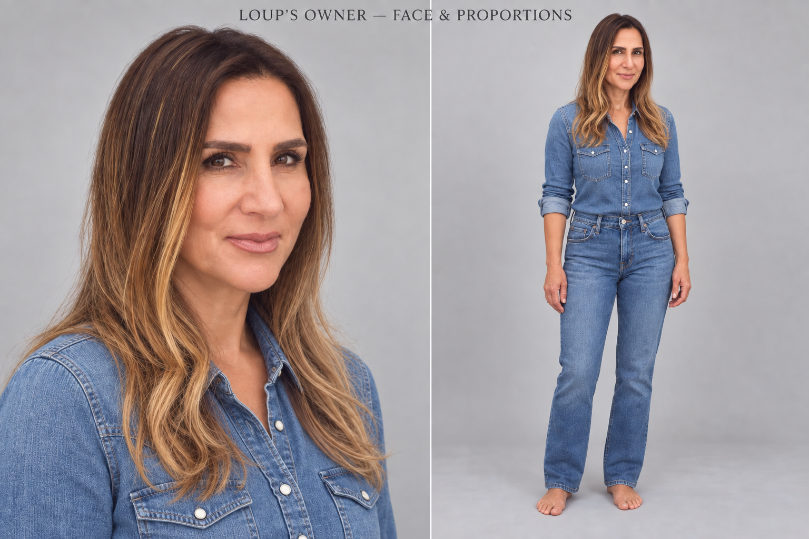
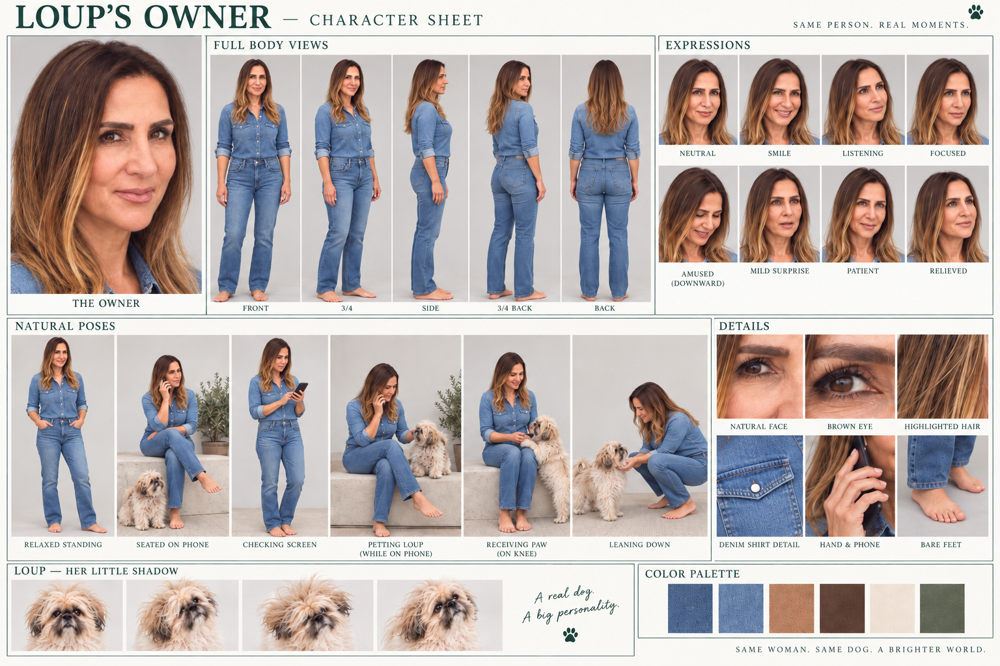
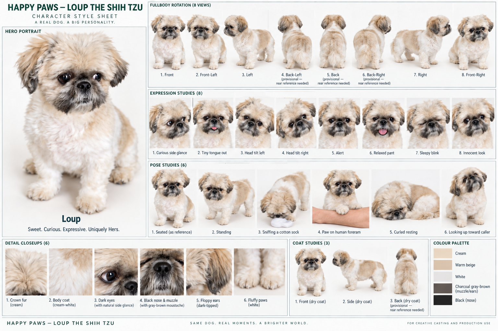
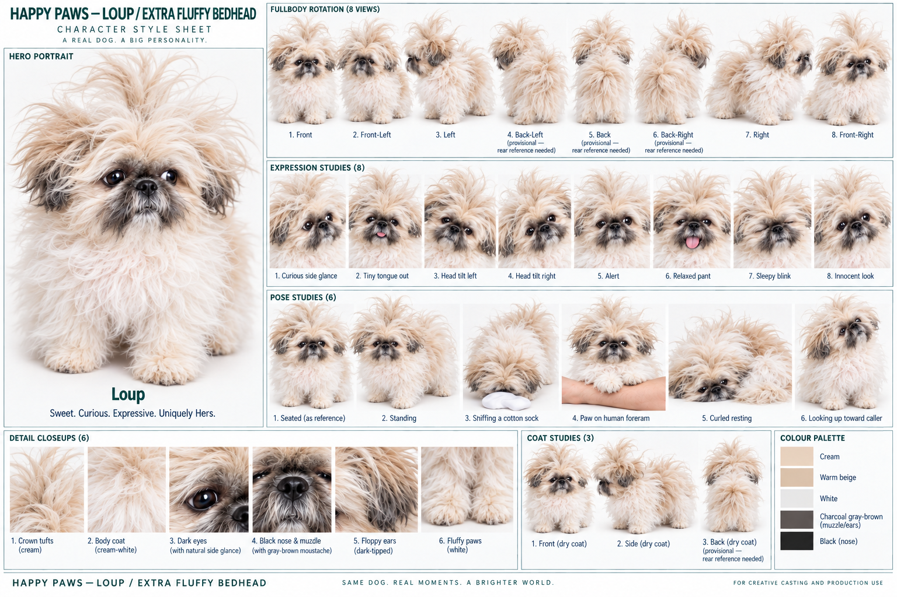
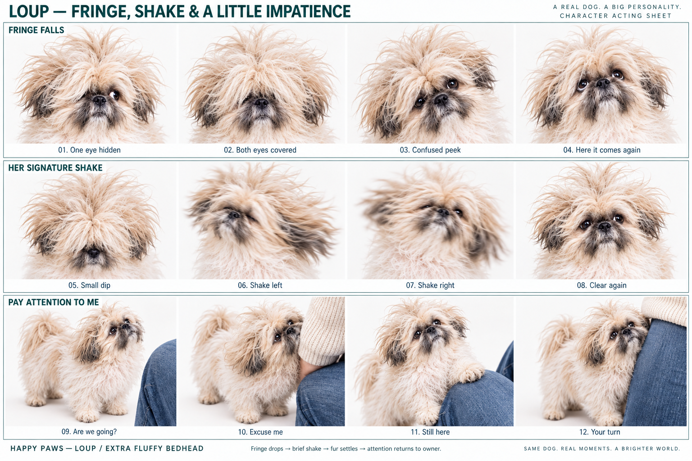
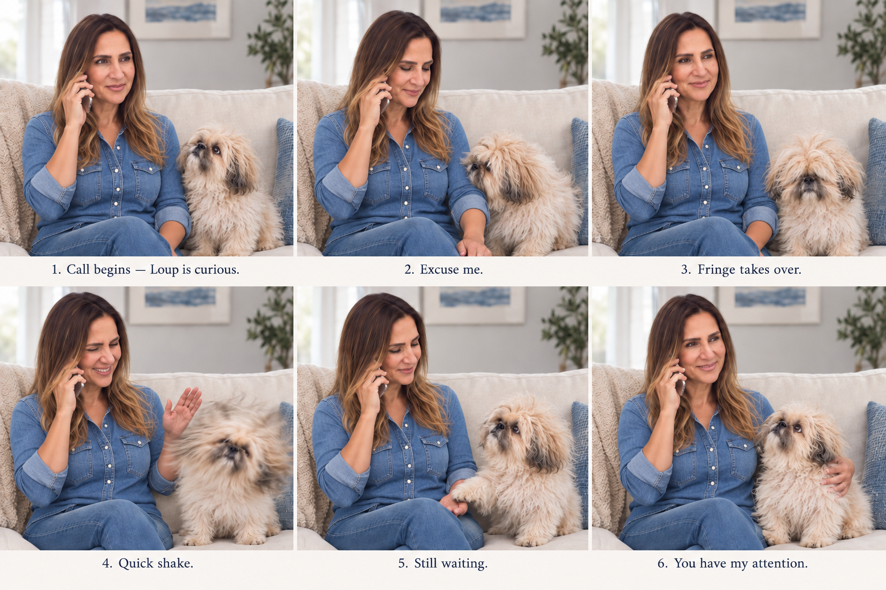
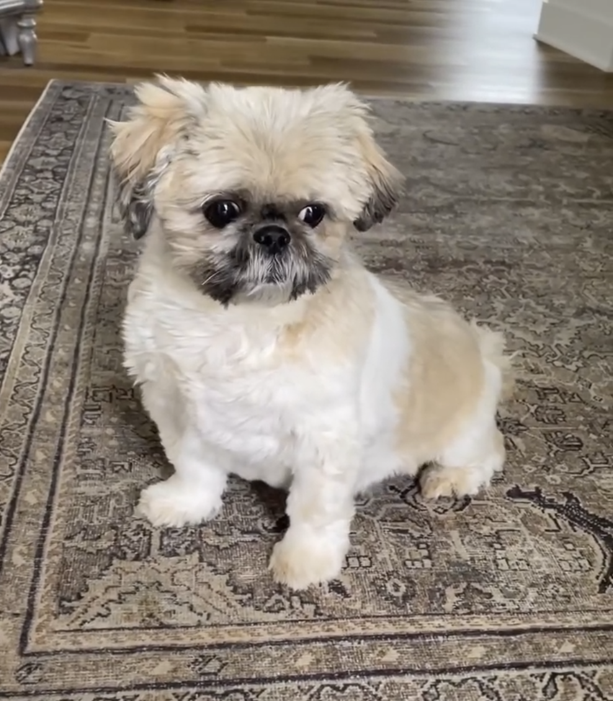
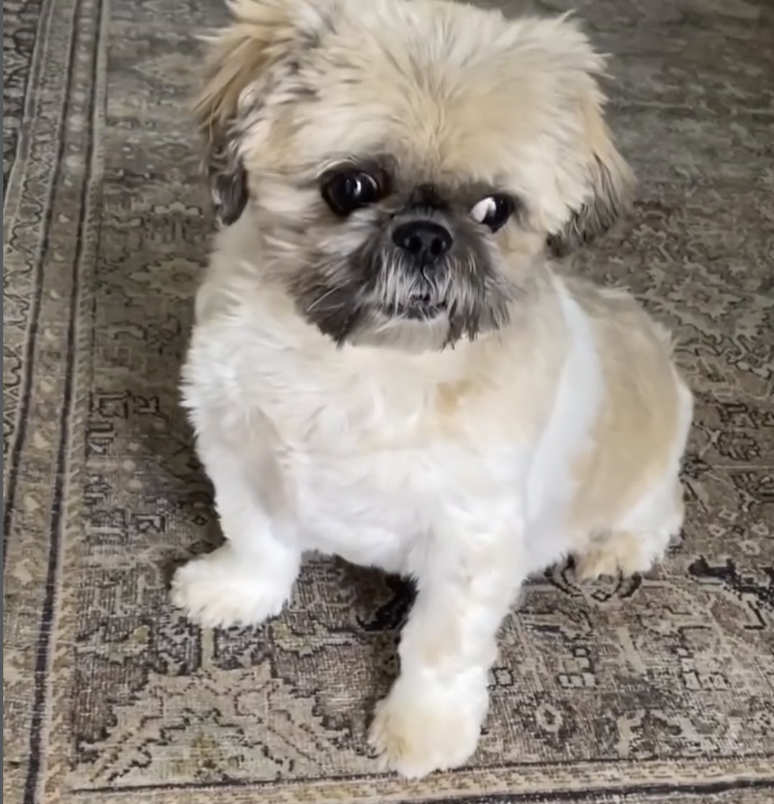

The people.
The dogs. The details.
The opening Happy Paws cast, developed from the existing storyboard. Faces, clothing, coat details and physical actions get their own references before we rebuild the individual shots.
Human realism revision: these first human studies are too polished. The next pass establishes a close-up portrait with specific complexion, age lines, eye colour and natural hair detail before rebuilding the sheet. Current artwork is preserved. Happy Little Pillow’s approved master remains unchanged.
The groomer
Hands stay with the dog.The Samoyed
The dog already in the tub.Loup’s caller
Calling from home.Loup the Shih Tzu
Bubs’s Shih Tzu.The groomer
Dark hair in a loose high bun, black T-shirt, forest-green waterproof apron and black work shoes. The sheet covers her portrait, five views, eight expressions, six working poses and clothing details.

Keep consistent
She stands outside the tub, shoes on the floor. Left hand steadies the dog; right hand washes or rinses. Her hands stay with the dog when the phone rings. The bun, apron straps and sleeve length remain unchanged.
{kind=link}
The Samoyed
Large white dog, upright triangular ears, almond-dark eyes, black nose and a curled plume tail. Angles, expressions, poses and coat stages keep the washing sequence coherent.

Keep consistent
Shampoo sits on the shoulder and upper back, then rinses away. The face stays dry and above the tub rim. Do not jump from a damp coat to a freshly brushed dry coat in the next shot.
{kind=link}
Loup’s owner
The woman selected in your three photos: defined dark brows, dark brown eyes, a softly refreshed complexion and long dark-rooted hair with caramel highlights. Blue denim shirt with rolled sleeves, blue jeans, bare feet and a silver phone. A warm, patient owner handling an eager little interruption.


Download owner sheet ↓View face & proportions →See them together →Previous styling (archived) →Previous proportion study →Previous owner (archived) →
{kind=link}
Keep consistent
Phone stays in her right hand at her right ear. Loup sits to her left; her free left hand receives a paw or strokes Loup’s shoulder. Keep the highlighted hair, denim collar, rolled sleeves, bare feet and natural facial texture consistent.
Loup the Shih Tzu
Loup is the caller’s dog. These two supplied photos are her identity reference: cream-and-white coat, darker floppy ears and muzzle, a short muzzle, large dark eyes, short legs and fluffy white paws. Keep her natural sideways glance and current haircut.

Download Loup character sheet ↓
{kind=link}
Loup · Extra fluffy bedhead
A second grooming look: an extra-full fuzzy coat and wild, oversized crown tufts, with the same face, dark muzzle and floppy ears. The approved original above stays unchanged.

Download extra fluffy bedhead sheet ↓ · Previous bedhead version
{kind=link}
Loup · Fringe, shake & a little impatience
Her fringe falls over one eye, then both. A brief head shake clears it; the fur settles and she turns straight back to her owner. Slightly confused, eager and gently insistent: a nose nudge, a paw on the knee, then a determined upward look.

{kind=link}
Loup & her owner
One phone call, lots of interruptions. Loup nudges closer, loses sight beneath her fringe, shakes it clear and asks for attention again. Her owner stays on the call and responds with an affectionate touch.

{kind=link}


Keep consistent
Loup is female and stays dry at home beside the caller. Her humor comes from a glance or gentle head tilt, not the old Yorkie’s exaggerated flyaway hair. She does not become the white Samoyed in the tub. The photos do not fully establish her back markings or tail; do not present invented rear details as verified.
The original photos remain the final reference for Loup’s likeness and markings.
Download body reference ↓Download face reference ↓Previous Milo concept (archived) →
{kind=link}
{kind=link}
One scene, one clear action.
| Scene | Characters | Action to preserve |
|---|---|---|
| 2 · Hands full | Groomer + Samoyed | Both of her feet outside the tub; dog standing inside. Phone beyond splash range. |
| 3 · Can’t pick up | Groomer + Samoyed | A glance toward the phone. Hands stay working; coat wetness matches scene 2. |
| 4 · Someone answers | Happy Little Pillow + background groomer and Samoyed | Approved mascot with grooming apron beside the dry shelf. Owner does not appear here. |
| 5 · Loup needs a groom | Owner + Loup | Home location, right-hand phone, dry cream-and-white Shih Tzu. No Samoyed. |
| 6 · A time that works | Same owner + same Loup | New camera angle, unchanged outfit and phone hand. Confirmation follows her agreement. |
| 7 · Back to the dog | Groomer + Samoyed | A new rinse action and framing. Do not replay the opening shot. |
The other chapters—salon, photography and workshop—are next in the cast pass. Their sheets will keep the different people distinct. Final scene images follow the cast references.